第 1 题
金属材料的判断
题目与已知条件
材料是人类赖以生存和发展的物质基础。下列材料属于金属材料的是
所用高中知识
金属材料包括纯金属与合金。
读题与思路
逐项判断材料类别。
分步解析
- 不锈钢是铁合金，属于金属材料，A正确。
- 金刚石为碳单质（无机非金属），玄武岩纤维、玻璃纤维均为硅酸盐类无机非金属材料。
答案
A
检查与易错点
“纤维”不一定是有机高分子，玄武岩、玻璃纤维属于无机非金属材料。
本题来源：doc-hunan-q
湖南省2025年普通高中学业水平选择性考试 化学
18 题 · 全文材料 · 完整题干 · 独立推导
湖南2025年化学为本省自主命题的湖南卷，共18题：单选1—14（每题3分，共42分），非选择题15—18（共58分）。本册替换此前误收的全国卷理综化学部分。
题文、表格与图依据用户所附《2025年高考真题——化学（湖南卷）Word版无答案》逐题转录，第18题（4）②（无答案版缺失）据同卷含解析版补全；公式由原文件公式对象逐一核对。全部答案独立推导后与所附参考答案交叉核对，选择题全部一致。
阅读材料全文
湖南省2025年普通高中学业水平选择性考试 化学
可能用到的相对原子质量：H 1 C 12 N 14 O 16 S 32 K 39 Fe 56 Ba 137 Bi 209
一、选择题：本题共14小题，每小题3分，共42分。在每小题给出的四个选项中，只有一项是符合题目要求的。
相关题目：第 1 题 · 第 2 题 · 第 3 题 · 第 4 题 · 第 5 题 · 第 6 题 · 第 7 题 · 第 8 题 · 第 9 题 · 第 10 题 · 第 11 题 · 第 12 题 · 第 13 题 · 第 14 题
第 1 题
材料是人类赖以生存和发展的物质基础。下列材料属于金属材料的是
金属材料包括纯金属与合金。
逐项判断材料类别。
A
“纤维”不一定是有机高分子，玄武岩、玻璃纤维属于无机非金属材料。
本题来源：doc-hunan-q
第 2 题
化学实验充满着五颜六色的变化。下列描述错误的是
| A | B | C | D |
|---|---|---|---|
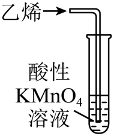 |
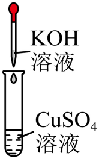 |
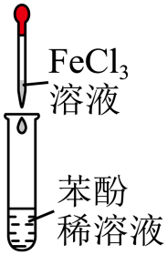 |
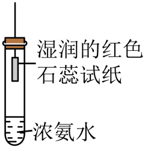 |
| 溶液褪色 | 产生红色沉淀 | 溶液呈紫色 | 试纸变为蓝色 |
乙烯的还原性；Cu(OH)₂颜色；酚的显色反应；氨气的检验。
逐个回忆现象。
B
砖红色沉淀是新制Cu(OH)₂被醛还原生成的Cu₂O，与本实验不同。
本题来源：doc-hunan-q
第 3 题
加热时，浓硫酸与木炭发生反应：2H₂SO₄(浓) + C ═△═ CO₂↑ + 2SO₂↑ + 2H₂O。设 为阿伏加德罗常数的值。下列说法正确的是
物质的量计算；气体摩尔体积使用条件；可逆反应。
逐项检查条件。
A
pH给的是H⁺浓度，与酸的元数无关。
本题来源：doc-hunan-q
第 4 题
只用一种试剂，将Na₂SO₄、(NH₄)₂CO₃、AlCl₃、KNO₃四种物质的溶液区分开，这种试剂是
离子检验：SO₄²⁻、NH₄⁺、CO₃²⁻、Al³⁺。
选择能与多种离子产生不同现象的试剂。
D
Ba²⁺与OH⁻两种离子同时起作用，是本题关键。
本题来源：doc-hunan-q
第 5 题
下列有关物质性质的解释错误的是
| 性质 | 解释 | |
|---|---|---|
| A | 酸性：CH₃COOH < HCOOH | —CH₃是推电子基团 |
| B | 熔点：C₂H₅NH₃NO₃ < NH₄NO₃ | C₂H₅NH₃⁺的体积大于NH₄⁺ |
| C | 熔点：Fe > Na | Fe比Na的金属性弱 |
| D | 沸点：H₂O > H₂S | H₂O分子间存在氢键 |
诱导效应；离子晶体与金属晶体熔点；氢键。
判断“解释”是否为真正原因。
C
金属性（失电子能力）不是决定熔点的因素。
本题来源：doc-hunan-q
第 6 题
MZ₂浓溶液中含有的X[MZ₂(YX)]具有酸性，能溶解金属氧化物。元素X、Y、Z、M的原子序数依次增大，分别位于不同的前四周期。Y的最外层电子数是内层的3倍，X和Y的最外层电子数之和等于Z的最外层电子数，M的价层电子排布是 。下列说法正确的是
原子结构推断；电负性；分子极性；牺牲阳极保护法。
Y为O，M为Zn；X在第一周期为H，Z最外层7个电子且在第三周期为Cl。
D
臭氧分子为V形，存在极性，不是非极性分子。
本题来源：doc-hunan-q
第 7 题
K⁺掺杂的铋酸钡具有超导性。K⁺替代部分Ba²⁺形成Ba₀.₆K₀.₄BiO₃(摩尔质量为354.8 g·mol⁻¹)，其晶胞结构如图所示。该立方晶胞的参数为a nm，设 为阿伏加德罗常数的值。下列说法正确的是
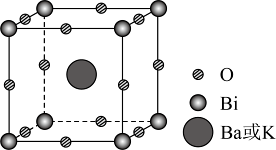
均摊法；配位数；晶体密度；第一电离能。
Bi在顶点、O在棱心、Ba/K在体心，为钙钛矿型。
A
nm换算成cm是 ，体积是 。
本题来源：doc-hunan-q
第 8 题
NaSbO₃是一种合成聚酯的催化剂，可用“硝酸钠法”制备，反应方程式为 4NaNO₃ + 4Sb + 3O₂ ══(高温)══ 4NaSbO₃ + 2NO + 2NO₂。下列说法错误的是
化合价；VSEPR；氧化还原中电子转移。
氧化剂有NaNO₃和O₂两种。
C
不要漏掉O₂也是氧化剂。
本题来源：doc-hunan-q
第 9 题
一种电化学处理硝酸盐产氨的工作原理如图所示。下列说法错误的是
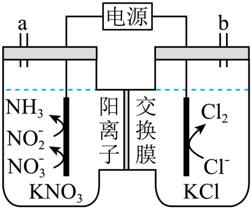
电解池电极判断、离子迁移；中间产物浓度变化；氯水性质。
左室NO₃⁻→NO₂⁻→NH₃为阴极，右室Cl⁻→Cl₂为阳极。
B
中间产物的浓度通常先升后降。
本题来源：doc-hunan-q
第 10 题
天冬氨酸广泛应用于医药、食品和化工等领域。天冬氨酸的一条合成路线如下：
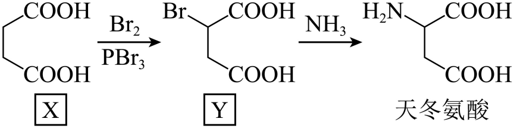
下列说法正确的是
等效氢；卤代羧酸与碱的反应；氨基酸两性；缩聚。
逐项结合结构判断。
C
卤代烃在NaOH水溶液中水解也消耗NaOH。
本题来源：doc-hunan-q
第 11 题
SnCl₂具有还原性，易水解。一种制备纯净的SnCl₂的装置示意图如下：
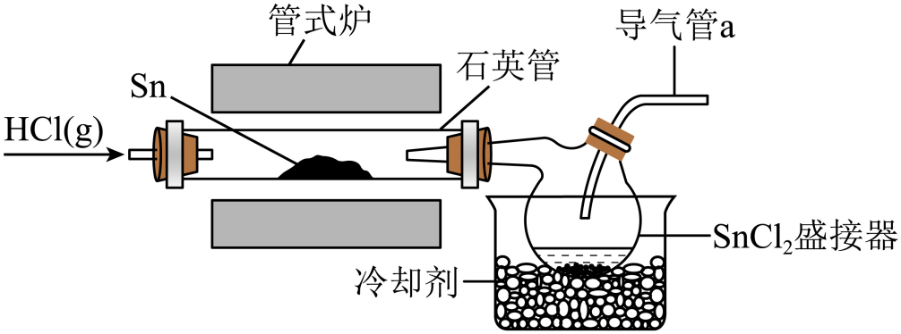
下列说法错误的是
易水解、易氧化物质的制备与保存。
Cl₂具有强氧化性。
C
Sn与Cl₂反应生成高价态SnCl₄。
本题来源：doc-hunan-q
第 12 题
工业废料的综合处理有利于减少环境污染并实现资源循环利用。从某工业废料中回收镉、锰的部分工艺流程如下：
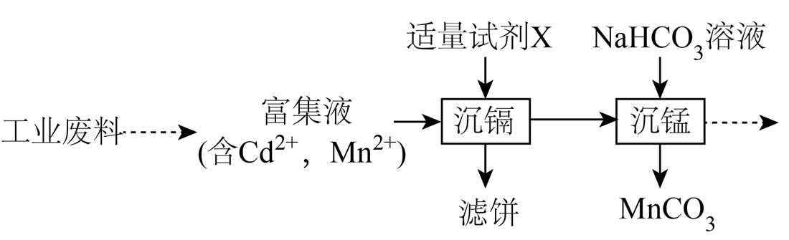
已知：①富集液中两种金属离子浓度相当。
②常温下，金属化合物的 ：
| 金属化合物 | CdS | CdCO₃ | MnS | MnCO₃ |
|---|---|---|---|---|
下列说法错误的是
溶度积与沉淀顺序；离子方程式书写。
CdS的 远小于MnS，可选择性沉镉；若先加NaHCO₃，CdCO₃更难溶会先沉淀。
D
用HCO₃⁻沉淀金属离子时，产物中有CO₂和水，而非H⁺。
本题来源：doc-hunan-q
第 13 题
草酸广泛应用于食品、药品等领域。常温下，通过下列实验探究了草酸的性质：
实验1：向10 mL 0.2 mol·L⁻¹ H₂C₂O₄溶液中滴入一定量0.2 mol·L⁻¹ KOH溶液。混合溶液的pH与lgX 的关系如图所示。
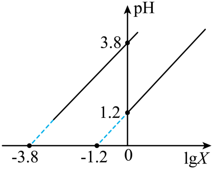
实验2：向10 mL 0.2 mol·L⁻¹ H₂C₂O₄溶液中加入10 mL 0.2 mol·L⁻¹ BaCl₂溶液。
已知：25℃时，。混合后溶液体积变化忽略不计。
下列说法错误的是
电离常数与pH；分布比较；溶度积判断沉淀；电荷守恒。
由 读出 、。
D
写电荷守恒必须列全所有离子，包括OH⁻。
本题来源：doc-hunan-q
第 14 题
环氧化合物是重要的有机合成中间体。以钛掺杂沸石为催化剂，由丙烯为原料生产环氧丙烷的反应机理如图所示。下列说法正确的是
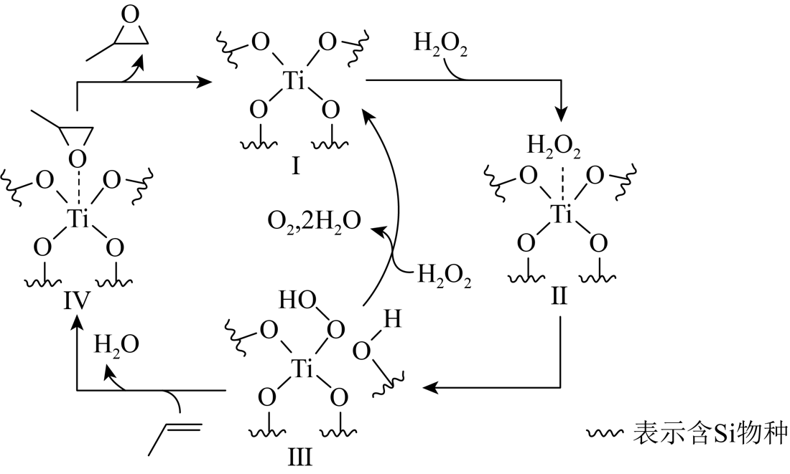
催化循环中催化剂与中间体的区分；化学键类型；原子利用率。
Ⅰ先参与后再生，是催化剂；Ⅱ、Ⅲ、Ⅳ为中间体。
B
副反应 2H₂O₂→O₂+2H₂O 中生成了非极性键。
本题来源：doc-hunan-q
阅读材料全文
二、非选择题：本题共4小题，共58分。
第 15 题
苯胺是重要的有机化工原料，其实验室制备原理如下：
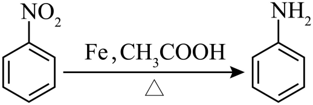
相关信息如下：
| 物质 | 相对分子质量 | 熔点/℃ | 沸点/℃ | 密度/(g·cm⁻³) | 溶解性 |
|---|---|---|---|---|---|
| 硝基苯 | 123 | 5.9 | 210.9 | 1.20 | 不溶于水，易溶于乙醚 |
| 苯胺 | 93 | −6.3 | 184.0 | 1.02 | 微溶于水，易溶于乙醚 |
| 乙酸 | 60 | 16.6 | 117.9 | 1.05 | 与水互溶 |
| 乙醚 | 74 | −116.3 | 34.5 | 0.71 | 微溶于水 |
反应装置Ⅰ和蒸馏装置Ⅱ(加热、夹持等装置略)如下：
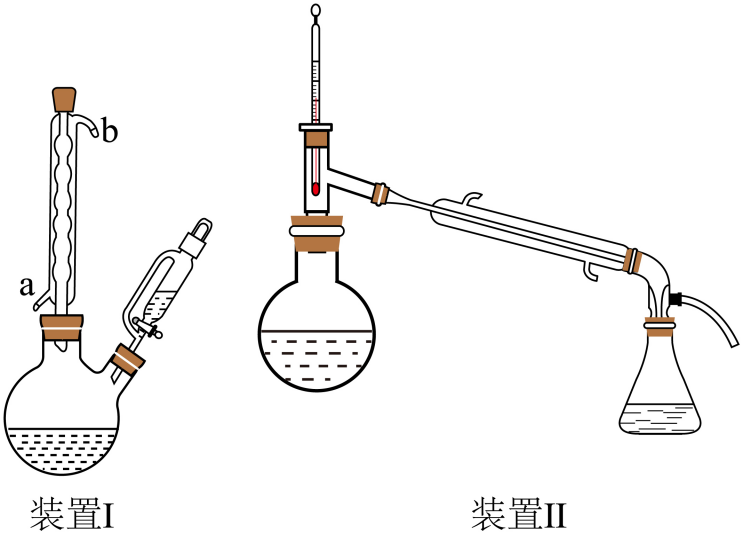
实验步骤为：
①向装置Ⅰ双颈烧瓶中加入13.5 g铁粉、25.0 mL水及1.50 mL乙酸，加热煮沸10 min；
②稍冷后，通过恒压滴液漏斗缓慢滴入8.20 mL硝基苯(0.08 mol)，再加热回流30 min；
③将装置Ⅰ改成水蒸气蒸馏装置，蒸馏收集苯胺-水馏出液；
④将苯胺-水馏出液用NaCl饱和后，转入分液漏斗静置分层，分出有机层；水层用乙醚萃取，分出醚层；合并有机层和醚层，用粒状氢氧化钠干燥，得到苯胺醚溶液；
⑤将苯胺醚溶液加入圆底烧瓶(装置Ⅱ)，先蒸馏回收乙醚，再蒸馏收集180～185℃馏分，得到5.58 g苯胺。
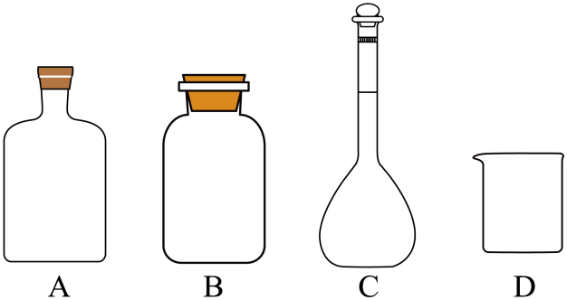
回答下列问题：
（1）实验室保存硝基苯的玻璃容器是______(填标号)。
（2）装置Ⅰ中冷凝管的进水口为______(填“a”或“b”)。
（3）步骤④中将苯胺-水馏出液用NaCl饱和的原因是______。
（4）步骤④中第二次分液，醚层位于______层(填“上”或“下”)。
（5）蒸馏回收乙醚时，锥形瓶需冰水浴的原因是______；回收乙醚后，需要放出冷凝管中的冷凝水再蒸馏，这样操作的原因是______。
（6）下列说法正确的是______(填标号)。
A. 缓慢滴加硝基苯是为了减小反应速率
B. 蒸馏时需加沸石，防止暴沸
C. 用红外光谱不能判断苯胺中是否含有硝基苯
D. 蒸馏回收乙醚，无需尾气处理
（7）苯胺的产率为______。
试剂保存；冷凝管使用；盐析；萃取分液；蒸馏操作；产率计算。
结合物性表判断分层与蒸馏条件；以硝基苯为准计算理论产量。
（1）A （2）a （3）盐析，降低苯胺在水中的溶解度 （4）上 （5）乙醚易挥发，冰水浴减少损失；苯胺沸点高，防止冷凝管因温差过大破裂 （6）B （7）75%
产率以不足量的硝基苯计算；高沸点物质（>140℃）蒸馏用空气冷凝。
本题来源：doc-hunan-q
第 16 题
一种从深海多金属结核[主要含MnO₂、FeO(OH)、SiO₂，有少量的Co₂O₃、Al₂O₃、NiO、CuO]中分离获得金属资源和电池级镍钴锰混合溶液(NiSO₄、CoSO₄、MnSO₄)的工艺流程如下：
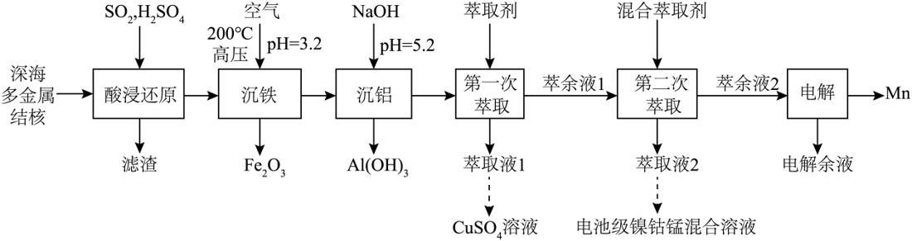
已知：①金属氢氧化物胶体具有吸附性，可吸附金属阳离子。
②常温下，溶液中金属离子(假定浓度均为0.1 mol·L⁻¹)开始沉淀和完全沉淀( mol·L⁻¹)的pH：
| Fe³⁺ | Al³⁺ | Cu²⁺ | Ni²⁺ | Co²⁺ | Mn²⁺ | |
|---|---|---|---|---|---|---|
| 开始沉淀的pH | 1.9 | 3.3 | 4.7 | 6.9 | 7.4 | 8.1 |
| 完全沉淀的pH | 3.2 | 4.6 | 6.7 | 8.9 | 9.4 | 10.1 |
回答下列问题：
（1）基态Ni的价层电子排布式为______。
（2）“酸浸还原”时，“滤渣”的主要成分是______(写化学式)；SO₂还原Co₂O₃的化学方程式为______。
（3）“沉铁”时，Fe²⁺转化为Fe₂O₃的离子方程式为______，加热至200℃的主要原因是______。
（4）“沉铝”时，未产生Cu(OH)₂沉淀，该溶液中c(Cu²⁺)不超过______mol·L⁻¹。
（5）“第二次萃取”时，______、______(填离子符号)与混合萃取剂形成的配合物(其结构如图所示，M表示金属元素)更稳定，这些配合物中氮原子的杂化类型为______。
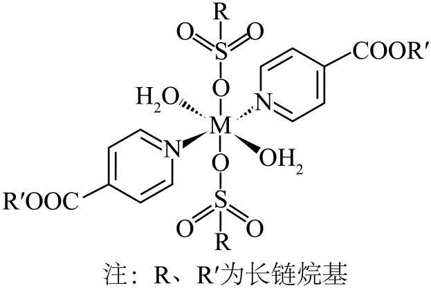
价电子排布；氧化还原方程式；胶体吸附；溶度积计算；配合物与杂化。
由开始沉淀pH求 ，再算沉铝pH=5.2时Cu²⁺上限。
（1） （2）SiO₂；SO₂ + Co₂O₃ + H₂SO₄ ══ 2CoSO₄ + H₂O （3）4Fe²⁺ + O₂ + 4H₂O ══(高压、200℃)══ 2Fe₂O₃ + 8H⁺；防止生成Fe(OH)₃胶体吸附金属阳离子 （4） （5）Co²⁺、Ni²⁺；
求 要用“开始沉淀”那一组数据及对应的0.1 mol·L⁻¹。
本题来源：doc-hunan-q
第 17 题
化合物F是治疗实体瘤的潜在药物。F的一条合成路线如下(略去部分试剂和条件)：
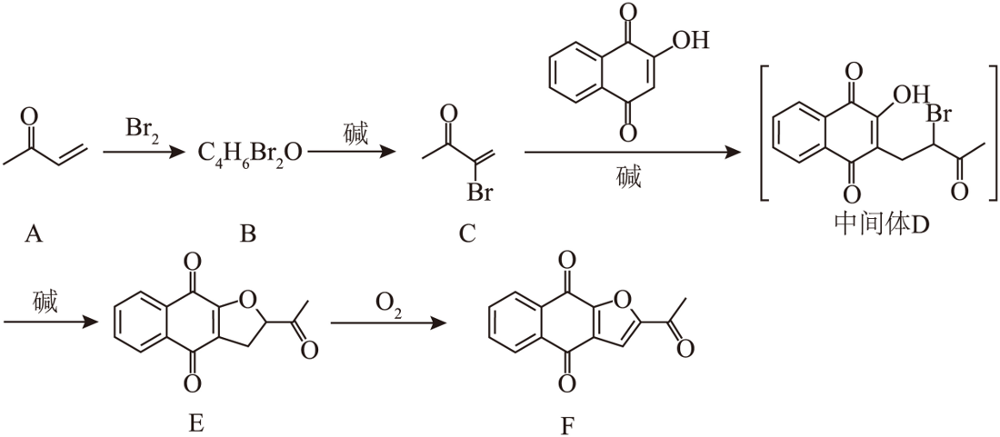
已知： 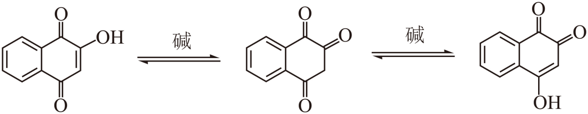
回答下列问题：
（1）A的官能团名称是______、______。
（2）B的结构简式是______。
（3）E生成F的反应类型是______。
（4）F所有的碳原子______共面(填“可能”或“不可能”)。
（5）B在生成C的同时，有副产物G生成。已知G是C的同分异构体，且与C的官能团相同。G的结构简式是______、______(考虑立体异构)。
（6）C与
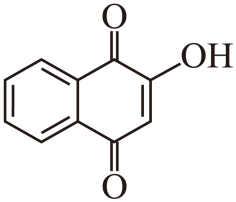
生成E的同时，有少量产物I生成，此时中间体H的结构简式是______。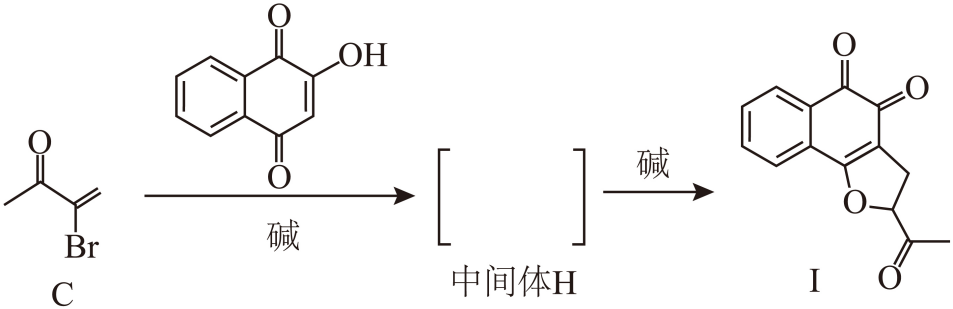
（7）依据以上流程信息，结合所学知识，设计以
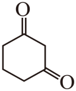
和H₂C=CH—CN为原料合成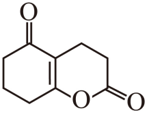
的路线______(无机试剂和溶剂任选)。加成、消去、Michael加成、分子内取代成环、氧化；顺反异构；平面结构判断。
A为丁烯酮，与Br₂加成得B，消去HBr得C；C与2-羟基-1,4-萘醌发生共轭加成得D，再分子内取代成环得E，E氧化脱氢得F。
（1）（酮）羰基、碳碳双键 （2）CH₃COCHBrCH₂Br （3）氧化反应 （4）可能 （5）(E)-与(Z)-CH₃COCH=CHBr （6）3-(2-溴-3-氧代丁基)-4-羟基-1,2-萘醌 （7）1,3-环己二酮 →(H₂C=CH—CN，碱) 2-(2-氰乙基)-1,3-环己二酮 →(H₃O⁺，△) 3-(2,6-二氧代环己基)丙酸 →(H⁺，△，分子内酯化) 目标稠环内酯
第（6）问的关键是已知中的互变异构：成环用的是哪一个羟基决定得到对醌E还是邻醌I。
本题来源：doc-hunan-q
第 18 题
在温和条件下，将CO转化为C₄烃类具有重要意义。采用电化学-化学串联催化策略可将CO高选择性合成C₄H₁₀，该流程示意图如下：
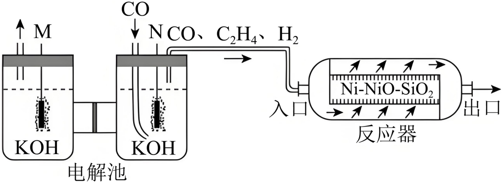
回答下列问题：
（1）电解池中电极M与电源的______极相连。
（2）CO放电生成C₂H₄的电极反应式为______。
（3）在反应器中，发生如下反应：
反应i：2C₂H₄(g) ⇌ C₄H₈(g) ΔH₁=−104.7 kJ·mol⁻¹
反应ii：2C₂H₄(g) + H₂(g) ⇌ C₄H₁₀(g) ΔH₂=−230.7 kJ·mol⁻¹
计算反应 C₄H₈(g) + H₂(g) ⇌ C₄H₁₀(g) 的ΔH=______kJ·mol⁻¹，该反应______(填标号)。
A．高温自发 B．低温自发 C．高温低温均自发 D．高温低温均不自发
（4）一定温度下，CO、C₂H₄和H₂(体积比为x∶2∶1)按一定流速进入装有催化剂的恒容反应器(入口压强为100 kPa)发生反应i和ii。有CO存在时，反应ii的反应进程如图1所示。随着x的增加，C₂H₄的转化率和产物的选择性(选择性 = 转化为目的产物所消耗乙烯的量/已转化的乙烯总量×100%)如图2所示。
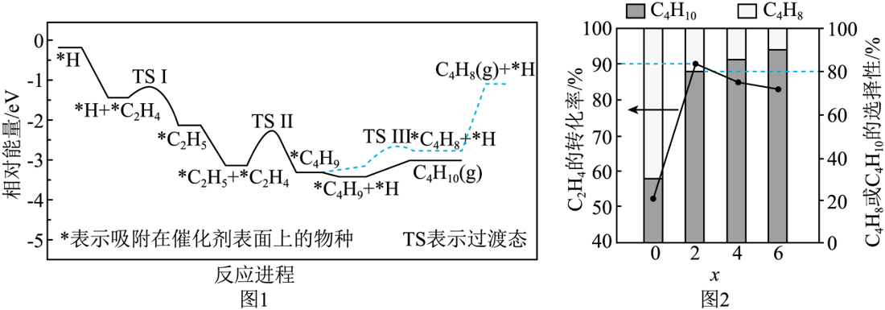
①根据图1，写出生成C₄H₁₀的决速步反应式______；C₄H₁₀的选择性大于C₄H₈的原因是______。
②结合图2，当x≥2时，混合气体以较低的流速经过恒容反应器时，反应近似达到平衡，随着x的增大，C₂H₄的转化率减小的原因是______；当x=2时，该温度下反应ii的 ______(保留两位小数)。
电解池电极判断与电极反应式；盖斯定律；ΔG=ΔH−TΔS；反应进程图中的决速步；分压平衡常数。
CO在N极被还原，故M为阳极；（4）②用x=2时转化率90%、C₄H₁₀选择性80%列三段式。
（1）正 （2）2CO + 8e⁻ + 6H₂O ══ C₂H₄ + 8OH⁻ （3）−126；B （4）①*C₂H₅ + *C₂H₄ ══ *C₄H₉；*C₄H₉生成C₄H₈的活化能较大、速率慢 ②CO分压增大相当于减压，反应i、ii平衡逆向移动；0.16
恒容反应器中CO虽不参与反应i、ii，但入口总压固定时x增大会降低反应物分压。
本题来源：doc-hunan-q